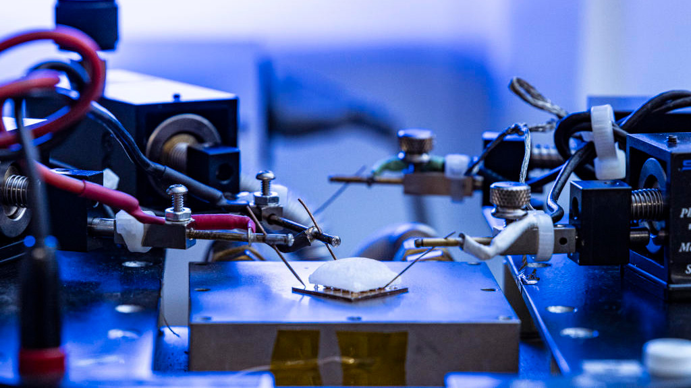

Sustainable Wearable Electronics — Thermoelectric Power Systems
Designed a PCB/IC platform on a breadboard that generates an electrical pulse every few minutes using thermoelectric generators (TEGs)—sufficient to power a wearable electrocardiograph long enough to capture a reading. Led PCB fabrication and tested 10 trials across 4 TEG configurations with 3+ controlled environmental variables to identify the most efficient array.
Published as: "Utilization of Commercial Peltier Thermoelectric Generators for Continuous Wearable Device Use," Oxford Journal of Student Scholarship, June 2026. Found no significant gain from series TEGs but a clear improvement from heat sinks. Read the publication →